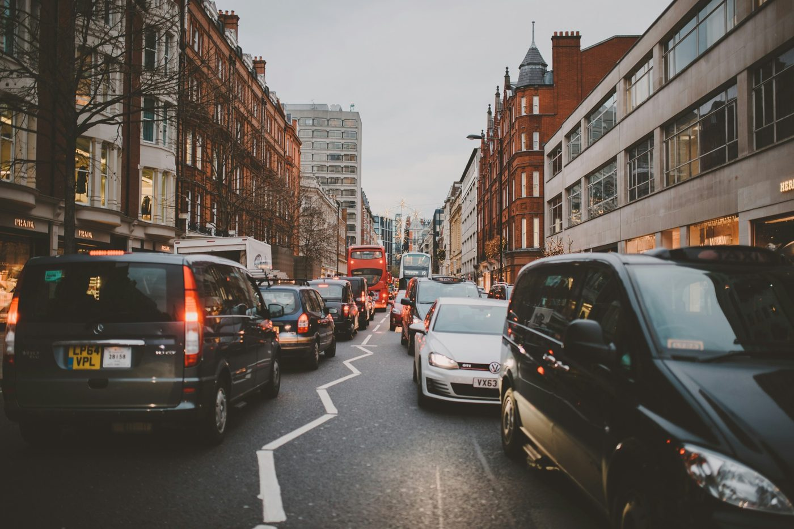

What ULEZ compliance actually means
ULEZ compliance does not mean your car is “clean”, “eco-friendly”, or mechanically sound. It only means your vehicle meets a specific emissions standard on record. That distinction matters because drivers often treat a “compliant” result as a green light for everything. It isn’t.
Think of it like an MOT: a pass doesn’t mean the car has no issues — it means it met a threshold on the day. And just like MOT advisories can warn about future failures, ULEZ compliance tells you nothing about reliability, wear, or safety.
ULEZ compliance vs “good” cars
We see this mistake often: someone buys a “newer” car because they want ULEZ compliance and assumes that decision automatically improved reliability and cost. Sometimes it does, sometimes it doesn’t. ULEZ is only one variable. If you’re buying used, you still need the bigger picture — especially MOT history and advisories.
If you haven’t already, use these together: MOT History Check UK and MOT Advisories Explained UK. ULEZ compliance helps you avoid charges; MOT insight helps you avoid buying problems.
Why ULEZ status matters (even if you rarely drive in London)
A lot of ULEZ penalties don’t happen to daily commuters. They happen to normal people on normal days: family visits, appointments, hospital trips, school runs, or “I’ll just drive in for one hour”. The system doesn’t care why you entered — only that you did.
- Sat-nav reroutes: a diversion pushes you through the zone and you don’t notice.
- Borrowed cars: you assume “it’s a newer model, it must be fine”.
- Visitors: you drive into London a few times a year and forget to check.
- Used-car buying: you check MOT but forget clean-air rules.
How the ULEZ checker works (and what it misses)
The official checker is the best starting point. It uses DVLA records to assess emissions standard and fuel type:
TfL “Check your vehicle” (official)
What the checker does well
- Fast confirmation for most UK-registered vehicles
- Clear result you can rely on for typical cars
What the checker can miss (important)
- Imports: emissions fields can be missing or outdated
- Plate changes: DVLA record updates can lag
- Borderline registrations: “same year” vehicles can differ by model variant

Edge cases that catch drivers out
These are the cases we see causing the most confusion — because they look compliant on the surface:
1) Hybrids that still fail ULEZ
Hybrid does not automatically mean compliant. Some hybrids were built for fuel efficiency more than emissions compliance. If the petrol/diesel engine doesn’t meet the required standard, charges can still apply.
2) Premium brands or powerful engines
Brand and price don’t matter. A premium car can still be non-compliant if its emissions category is below the required threshold. ULEZ is a classification rule, not a “new car vs old car” rule.
3) Imports and “missing” emissions records
Imported vehicles can have incomplete DVLA emissions data. That often leads to either confusing checker results or uncertainty. If you own an import and drive into London, check early — not on the day of travel.
4) Plate changes and DVLA timing
Drivers sometimes assume that if they changed a number plate or updated records, every system reflects it immediately. In practice, updates can take time to propagate.
Charges, penalties, and the “one-trip” trap
ULEZ is enforced automatically. If your vehicle is non-compliant, you must pay the charge for that day. If you don’t pay, you risk a penalty.
Because amounts and rules can change, always confirm the latest details using TfL’s official pages:
What to do if your car is not compliant
If your car is non-compliant, you basically have four paths. The “best” one depends on how often you enter the zone.
- Occasional travel: paying the charge may be cheaper than changing vehicles.
- Regular travel: charges can add up fast — upgrading may become the sensible option.
- Route changes: sometimes possible, but don’t rely on it if you regularly visit London.
- Switching to EV: useful, but only if charging availability matches your lifestyle.
If you’re considering EVs, don’t decide based on ULEZ alone. Start by reading Electric Car Charger Map UK and the reality-check piece UK Councils & EV Infrastructure.
ULEZ checks when buying a used car
ULEZ compliance is now part of UK used-car decision making — especially for buyers near London. But it should never be checked alone.
Here’s the correct order for most buyers:
- ULEZ compliance: avoid future daily cost surprises
- MOT history: spot repeats, mileage patterns, and past failures
- MOT advisories: understand what issues are likely to return
Use these together: MOT History Check UK and MOT Advisories Explained UK. ULEZ helps with compliance cost; MOT insight helps with mechanical risk.
Common ULEZ misunderstandings
- “My car passed MOT so it must be compliant” — false. Different systems, different thresholds.
- “Hybrid means compliant” — false. Hybrids vary widely by model and emissions standard.
- “ULEZ only applies to central London” — outdated. Coverage expanded across all boroughs.
- “I’ll be warned first” — false. It’s camera enforcement, not a manual stop.
These are the same pattern we see with MOT advisories: the risk isn’t the rule itself — it’s the assumptions people make around it.
ULEZ vs Clean Air Zones (UK)
ULEZ is London-specific. Other UK cities use Clean Air Zones (CAZ), and each city can apply different rules by vehicle type. The best single reference is:
If you want to understand why “policy coverage” doesn’t always match real-world experience, read Why UK councils are flying blind on EV charging infrastructure.
FAQs
Is ULEZ compliance the same as passing an MOT?
No. MOT tests mechanical safety; ULEZ is an emissions classification rule.
Can a car pass MOT but fail ULEZ?
Yes — very common, especially with older diesel vehicles.
Does ULEZ apply to visitors?
Yes. The rules apply to all vehicles driving in the zone, regardless of where the car is registered.
What if the checker result looks wrong for my car?
Do not guess. Confirm via official guidance and resolve before driving in, especially for imports or plate changes.

Editorial standards & sources
How this guide is written (EEAT)
- Experience: written from real UK driver scenarios where compliance rules create unexpected costs.
- Method: we prioritise official sources, then add practical interpretation and decision guidance.
- Updates: this page is updated when TfL/GOV.UK guidance changes.
Primary sources: TfL vehicle checker, TfL ULEZ, GOV.UK Clean Air Zones.
About the author
Author: Autodun Insights — Lead Analyst: Kamran Gul
Kamran analyses UK driver pain-points where official rules meet real journeys — including ULEZ compliance, cost traps, MOT risk patterns, and how policy impacts buying decisions. Autodun content is built from practical driver questions and is updated when official guidance changes.
Last updated: 9 Feb 2026